# Cargar librerías necesarias
suppressPackageStartupMessages({
library(tidyverse)
library(car) # Para VIF
library(leaps) # Para best subset selection
library(glmnet) # Para regularización
library(caret) # Para validación cruzada
library(corrplot) # Para matrices de correlación
library(MASS) # Para métodos stepwise
library(broom) # Para resultados ordenados
library(gridExtra) # Para múltiples gráficos
})
set.seed(123)Laboratorio 4: Selección de Variables, Regularización y Validación
Modelos Estadísticos de Predicción
Objetivos del Laboratorio
Al finalizar este laboratorio, serás capaz de:
- Aplicar filtros básicos para eliminación preliminar de variables
- Utilizar criterios de información (AIC, BIC, Cp) para comparar modelos
- Implementar métodos de selección exhaustiva (Best Subset Selection)
- Ejecutar métodos automáticos paso a paso (forward, backward, stepwise)
- Aplicar técnicas de regularización (Ridge, Lasso, Elastic Net)
- Validar modelos usando estrategias train/test y validación cruzada
- Interpretar métricas de rendimiento predictivo
Configuración Inicial
Parte 1: Preparación de Datos y Análisis Exploratorio
Dataset de Trabajo
Utilizaremos el dataset Boston Housing para demonstrar todas las técnicas. Este dataset contiene información sobre precios de viviendas en Boston y sus características.
# Cargar y explorar el dataset
data(Boston)
# Información básica del dataset
cat("=== INFORMACIÓN DEL DATASET ===\n")=== INFORMACIÓN DEL DATASET ===cat("Dimensiones:", nrow(Boston), "observaciones,", ncol(Boston), "variables\n\n")Dimensiones: 506 observaciones, 14 variables# Mostrar las primeras filas
head(Boston) crim zn indus chas nox rm age dis rad tax ptratio black lstat
1 0.00632 18 2.31 0 0.538 6.575 65.2 4.0900 1 296 15.3 396.90 4.98
2 0.02731 0 7.07 0 0.469 6.421 78.9 4.9671 2 242 17.8 396.90 9.14
3 0.02729 0 7.07 0 0.469 7.185 61.1 4.9671 2 242 17.8 392.83 4.03
4 0.03237 0 2.18 0 0.458 6.998 45.8 6.0622 3 222 18.7 394.63 2.94
5 0.06905 0 2.18 0 0.458 7.147 54.2 6.0622 3 222 18.7 396.90 5.33
6 0.02985 0 2.18 0 0.458 6.430 58.7 6.0622 3 222 18.7 394.12 5.21
medv
1 24.0
2 21.6
3 34.7
4 33.4
5 36.2
6 28.7# Resumen estadístico
summary(Boston) crim zn indus chas
Min. : 0.00632 Min. : 0.00 Min. : 0.46 Min. :0.00000
1st Qu.: 0.08205 1st Qu.: 0.00 1st Qu.: 5.19 1st Qu.:0.00000
Median : 0.25651 Median : 0.00 Median : 9.69 Median :0.00000
Mean : 3.61352 Mean : 11.36 Mean :11.14 Mean :0.06917
3rd Qu.: 3.67708 3rd Qu.: 12.50 3rd Qu.:18.10 3rd Qu.:0.00000
Max. :88.97620 Max. :100.00 Max. :27.74 Max. :1.00000
nox rm age dis
Min. :0.3850 Min. :3.561 Min. : 2.90 Min. : 1.130
1st Qu.:0.4490 1st Qu.:5.886 1st Qu.: 45.02 1st Qu.: 2.100
Median :0.5380 Median :6.208 Median : 77.50 Median : 3.207
Mean :0.5547 Mean :6.285 Mean : 68.57 Mean : 3.795
3rd Qu.:0.6240 3rd Qu.:6.623 3rd Qu.: 94.08 3rd Qu.: 5.188
Max. :0.8710 Max. :8.780 Max. :100.00 Max. :12.127
rad tax ptratio black
Min. : 1.000 Min. :187.0 Min. :12.60 Min. : 0.32
1st Qu.: 4.000 1st Qu.:279.0 1st Qu.:17.40 1st Qu.:375.38
Median : 5.000 Median :330.0 Median :19.05 Median :391.44
Mean : 9.549 Mean :408.2 Mean :18.46 Mean :356.67
3rd Qu.:24.000 3rd Qu.:666.0 3rd Qu.:20.20 3rd Qu.:396.23
Max. :24.000 Max. :711.0 Max. :22.00 Max. :396.90
lstat medv
Min. : 1.73 Min. : 5.00
1st Qu.: 6.95 1st Qu.:17.02
Median :11.36 Median :21.20
Mean :12.65 Mean :22.53
3rd Qu.:16.95 3rd Qu.:25.00
Max. :37.97 Max. :50.00 # Verificar valores faltantes
cat("\n=== VALORES FALTANTES ===\n")
=== VALORES FALTANTES ===colSums(is.na(Boston)) crim zn indus chas nox rm age dis rad tax
0 0 0 0 0 0 0 0 0 0
ptratio black lstat medv
0 0 0 0 # Descripción de variables
cat("\n=== DESCRIPCIÓN DE VARIABLES ===\n")
=== DESCRIPCIÓN DE VARIABLES ===cat("medv: Valor mediano de viviendas (variable respuesta)\n")medv: Valor mediano de viviendas (variable respuesta)cat("crim: Tasa de criminalidad per cápita\n")crim: Tasa de criminalidad per cápitacat("zn: Proporción de lotes residenciales > 25,000 sq.ft\n")zn: Proporción de lotes residenciales > 25,000 sq.ftcat("indus: Proporción de acres comerciales no retail\n")indus: Proporción de acres comerciales no retailcat("chas: Variable dummy para río Charles (1 si limita, 0 si no)\n")chas: Variable dummy para río Charles (1 si limita, 0 si no)cat("nox: Concentración de óxidos nítricos\n")nox: Concentración de óxidos nítricoscat("rm: Número promedio de habitaciones\n")rm: Número promedio de habitacionescat("age: Proporción de unidades ocupadas construidas antes de 1940\n")age: Proporción de unidades ocupadas construidas antes de 1940cat("dis: Distancias ponderadas a centros de empleo\n")dis: Distancias ponderadas a centros de empleocat("rad: Índice de accesibilidad a autopistas radiales\n")rad: Índice de accesibilidad a autopistas radialescat("tax: Tasa de impuesto a la propiedad\n")tax: Tasa de impuesto a la propiedadcat("ptratio: Proporción alumno-profesor\n")ptratio: Proporción alumno-profesorcat("black: Proporción de población afroamericana\n")black: Proporción de población afroamericanacat("lstat: Porcentaje de población de bajo estatus\n")lstat: Porcentaje de población de bajo estatusVisualización de Relaciones
# Matriz de correlaciones
cor_matrix <- cor(Boston)
# Visualizar matriz de correlaciones
corrplot(cor_matrix, method = "color", type = "upper",
order = "hclust", tl.cex = 0.8, tl.col = "black",
addCoef.col = "black", number.cex = 0.6)
title("Matriz de Correlaciones - Boston Housing")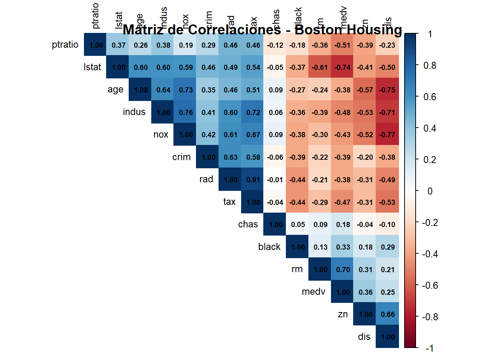
# Histograma de la variable respuesta
ggplot(Boston, aes(x = medv)) +
geom_histogram(bins = 30, fill = "lightblue", color = "black", alpha = 0.7) +
labs(title = "Distribución del Precio de Viviendas",
x = "Valor Mediano (miles de $)", y = "Frecuencia") +
theme_minimal()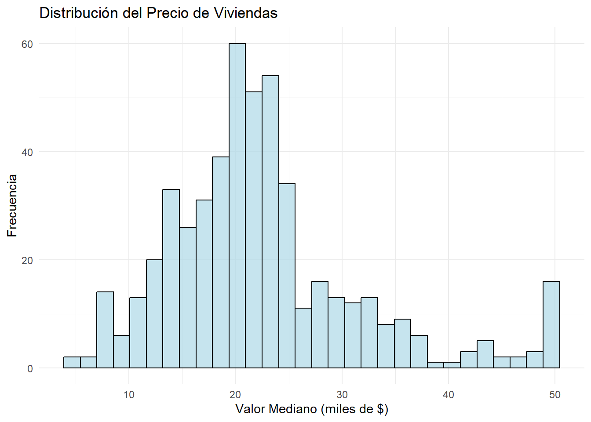
# Boxplot para identificar outliers
ggplot(Boston, aes(y = medv)) +
geom_boxplot(fill = "lightgreen", alpha = 0.7) +
labs(title = "Boxplot del Precio de Viviendas",
y = "Valor Mediano (miles de $)") +
theme_minimal()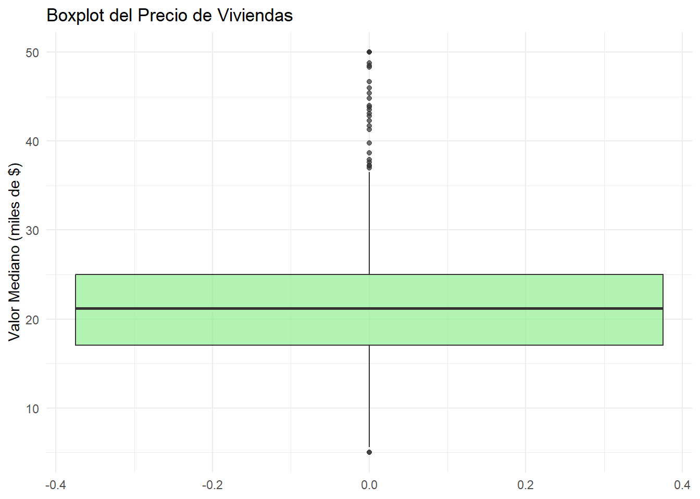
Parte 2: Filtrado Basado en Información Básica
Análisis de Variabilidad
# Calcular varianzas de todas las variables predictoras
varianzas <- Boston %>%
dplyr::select(-medv) %>%
summarise_all(var) %>%
gather(variable, varianza) %>%
arrange(varianza)
print(varianzas) variable varianza
1 nox 1.342764e-02
2 chas 6.451297e-02
3 rm 4.936709e-01
4 dis 4.434015e+00
5 ptratio 4.686989e+00
6 indus 4.706444e+01
7 lstat 5.099476e+01
8 crim 7.398658e+01
9 rad 7.581637e+01
10 zn 5.439368e+02
11 age 7.923584e+02
12 black 8.334752e+03
13 tax 2.840476e+04# Identificar variables con baja variabilidad (umbral arbitrario)
umbral_varianza <- 0.01
vars_baja_varianza <- varianzas$variable[varianzas$varianza < umbral_varianza]
cat("\n=== VARIABLES CON BAJA VARIABILIDAD ===\n")
=== VARIABLES CON BAJA VARIABILIDAD ===if(length(vars_baja_varianza) > 0) {
cat("Variables con varianza <", umbral_varianza, ":", paste(vars_baja_varianza, collapse = ", "), "\n")
} else {
cat("No hay variables con varianza excesivamente baja\n")
}No hay variables con varianza excesivamente baja# Visualizar varianzas
ggplot(varianzas, aes(x = reorder(variable, varianza), y = varianza)) +
geom_col(fill = "steelblue", alpha = 0.7) +
coord_flip() +
labs(title = "Varianza de Variables Predictoras",
x = "Variable", y = "Varianza") +
theme_minimal()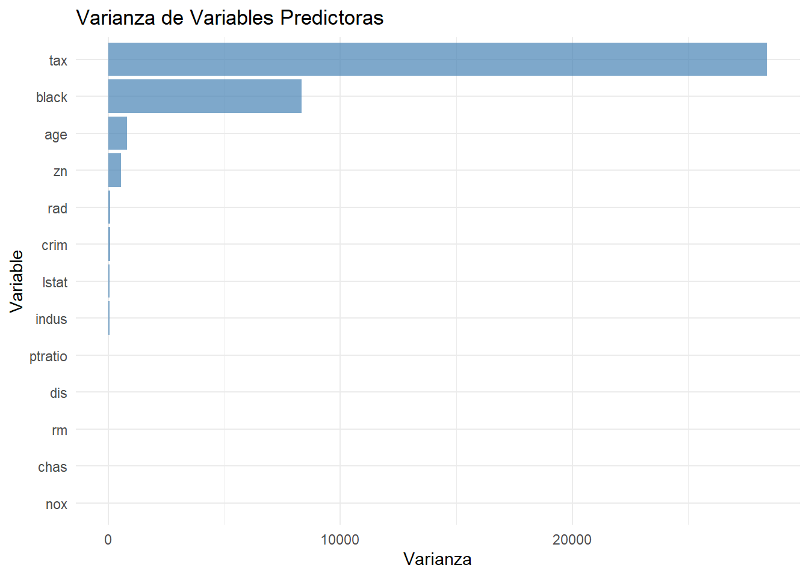
Análisis de Correlación con Variable Respuesta
# Calcular correlaciones con la variable respuesta
correlaciones_y <- cor(Boston[, -which(names(Boston) == "medv")], Boston$medv) %>%
as.data.frame() %>%
rownames_to_column("variable") %>%
rename(correlacion = V1) %>%
mutate(correlacion_abs = abs(correlacion)) %>%
arrange(desc(correlacion_abs))
print(correlaciones_y) variable correlacion correlacion_abs
1 lstat -0.7376627 0.7376627
2 rm 0.6953599 0.6953599
3 ptratio -0.5077867 0.5077867
4 indus -0.4837252 0.4837252
5 tax -0.4685359 0.4685359
6 nox -0.4273208 0.4273208
7 crim -0.3883046 0.3883046
8 rad -0.3816262 0.3816262
9 age -0.3769546 0.3769546
10 zn 0.3604453 0.3604453
11 black 0.3334608 0.3334608
12 dis 0.2499287 0.2499287
13 chas 0.1752602 0.1752602# Visualizar correlaciones
ggplot(correlaciones_y, aes(x = reorder(variable, correlacion), y = correlacion)) +
geom_col(aes(fill = correlacion > 0), alpha = 0.7) +
coord_flip() +
scale_fill_manual(values = c("red", "blue"),
labels = c("Negativa", "Positiva"),
name = "Correlación") +
labs(title = "Correlación de Variables Predictoras con Precio",
x = "Variable", y = "Correlación con medv") +
theme_minimal()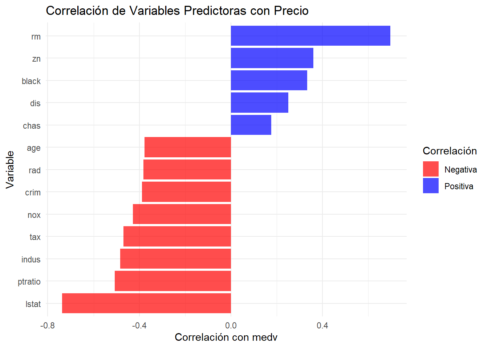
# Identificar variables con correlación muy baja
umbral_correlacion <- 0.1
vars_baja_corr <- correlaciones_y$variable[correlaciones_y$correlacion_abs < umbral_correlacion]
cat("\n=== VARIABLES CON BAJA CORRELACIÓN ===\n")
=== VARIABLES CON BAJA CORRELACIÓN ===if(length(vars_baja_corr) > 0) {
cat("Variables con |correlación| <", umbral_correlacion, ":", paste(vars_baja_corr, collapse = ", "), "\n")
} else {
cat("Todas las variables tienen correlación > 0.1 con la respuesta\n")
}Todas las variables tienen correlación > 0.1 con la respuestaAnálisis de Multicolinealidad
# Ajustar modelo completo para calcular VIF
modelo_completo <- lm(medv ~ ., data = Boston)
# Calcular VIF
vif_valores <- vif(modelo_completo)
vif_df <- data.frame(
variable = names(vif_valores),
VIF = vif_valores
) %>%
arrange(desc(VIF))
print(vif_df) variable VIF
tax tax 9.008554
rad rad 7.484496
nox nox 4.393720
indus indus 3.991596
dis dis 3.955945
age age 3.100826
lstat lstat 2.941491
zn zn 2.298758
rm rm 1.933744
ptratio ptratio 1.799084
crim crim 1.792192
black black 1.348521
chas chas 1.073995# Visualizar VIF
ggplot(vif_df, aes(x = reorder(variable, VIF), y = VIF)) +
geom_col(fill = "orange", alpha = 0.7) +
geom_hline(yintercept = 10, color = "red", linetype = "dashed", size = 1) +
geom_hline(yintercept = 5, color = "orange", linetype = "dashed", size = 1) +
coord_flip() +
labs(title = "Factor de Inflación de la Varianza (VIF)",
subtitle = "Línea roja: VIF = 10 (problemático), Línea naranja: VIF = 5 (moderado)",
x = "Variable", y = "VIF") +
theme_minimal()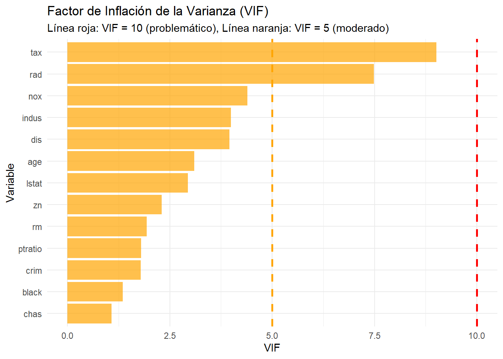
# Identificar variables con VIF alto
vars_alto_vif <- vif_df$variable[vif_df$VIF > 5]
cat("\n=== VARIABLES CON VIF ALTO ===\n")
=== VARIABLES CON VIF ALTO ===if(length(vars_alto_vif) > 0) {
cat("Variables con VIF > 5:", paste(vars_alto_vif, collapse = ", "), "\n")
cat("Considera eliminar algunas de estas variables para reducir multicolinealidad\n")
} else {
cat("No hay problemas severos de multicolinealidad\n")
}Variables con VIF > 5: tax, rad
Considera eliminar algunas de estas variables para reducir multicolinealidad# Matriz de correlación entre predictores altamente correlacionados
if(length(vars_alto_vif) > 0) {
high_vif_cors <- cor(Boston[, vars_alto_vif])
corrplot(high_vif_cors, method = "color", addCoef.col = "black",
title = "Correlaciones entre Variables con VIF Alto", mar = c(0,0,1,0))
}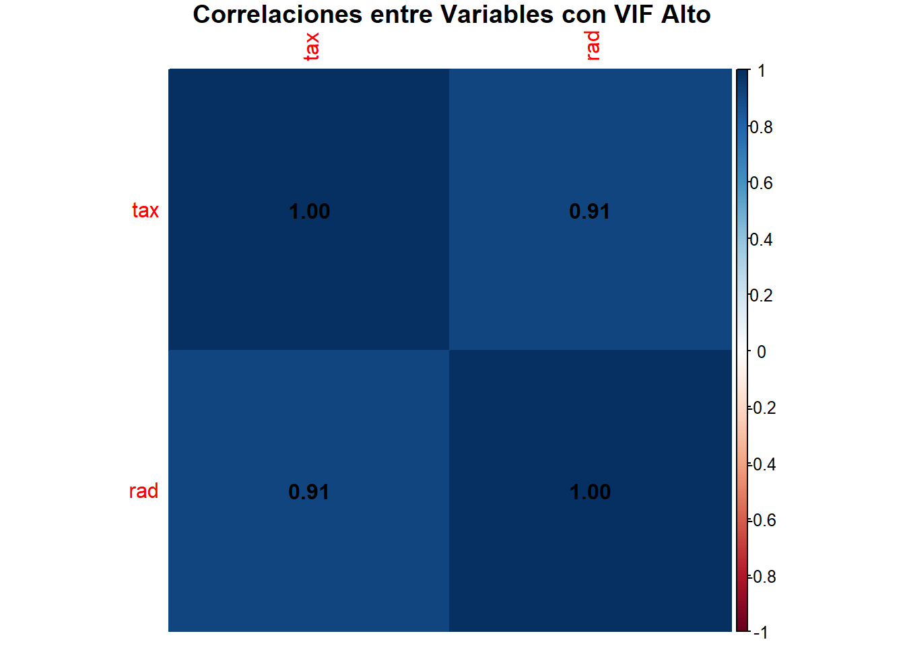
Resumen del Filtrado Inicial
# Resumen de filtrado
cat("=== RESUMEN DEL FILTRADO INICIAL ===\n\n")=== RESUMEN DEL FILTRADO INICIAL ===cat("Variables originales:", ncol(Boston) - 1, "\n")Variables originales: 13 cat("Variables con baja variabilidad:", length(vars_baja_varianza), "\n")Variables con baja variabilidad: 0 cat("Variables con baja correlación:", length(vars_baja_corr), "\n")Variables con baja correlación: 0 cat("Variables con VIF alto:", length(vars_alto_vif), "\n\n")Variables con VIF alto: 2 # Variables a considerar eliminar
vars_eliminar_candidatas <- unique(c(vars_baja_varianza, vars_baja_corr))
if(length(vars_eliminar_candidatas) > 0) {
cat("Variables candidatas a eliminar:", paste(vars_eliminar_candidatas, collapse = ", "), "\n")
} else {
cat("No se identificaron variables claras para eliminar en filtrado básico\n")
}No se identificaron variables claras para eliminar en filtrado básico# Para continuar, mantendremos todas las variables y dejaremos que los métodos
# de selección decidan cuáles son importantes
variables_finales <- setdiff(names(Boston), "medv")
cat("Variables para análisis posterior:", length(variables_finales), "\n")Variables para análisis posterior: 13 Parte 3: Criterios de Bondad de Ajuste
Modelos Candidatos con Diferentes Números de Variables
# Crear algunos modelos candidatos de diferentes complejidades
modelo_simple <- lm(medv ~ lstat, data = Boston)
modelo_dos_vars <- lm(medv ~ lstat + rm, data = Boston)
modelo_tres_vars <- lm(medv ~ lstat + rm + ptratio, data = Boston)
modelo_intermedio <- lm(medv ~ lstat + rm + ptratio + nox + crim, data = Boston)
modelo_complejo <- lm(medv ~ lstat + rm + ptratio + nox + crim + dis + age, data = Boston)
modelo_completo <- lm(medv ~ ., data = Boston)
# Lista de modelos para comparación
modelos_candidatos <- list(
"Simple (1 var)" = modelo_simple,
"Dos variables" = modelo_dos_vars,
"Tres variables" = modelo_tres_vars,
"Intermedio (5 vars)" = modelo_intermedio,
"Complejo (7 vars)" = modelo_complejo,
"Completo (13 vars)" = modelo_completo
)Comparación usando AIC, BIC y Cp de Mallows
# Función para extraer métricas de los modelos
extraer_metricas <- function(modelo) {
summ <- summary(modelo)
n <- nobs(modelo)
p <- length(coef(modelo)) - 1 # Excluir intercepto
# Calcular Cp de Mallows usando el modelo completo como referencia
mse_full <- summary(modelo_completo)$sigma^2
sse_model <- sum(residuals(modelo)^2)
cp <- sse_model / mse_full - n + 2 * (p + 1)
return(data.frame(
n_variables = p,
R2 = summ$r.squared,
R2_adj = summ$adj.r.squared,
AIC = AIC(modelo),
BIC = BIC(modelo),
Cp = cp,
RMSE = sqrt(mean(residuals(modelo)^2))
))
}
# Extraer métricas para todos los modelos
comparacion_modelos <- map_dfr(modelos_candidatos, extraer_metricas, .id = "Modelo")
print(comparacion_modelos) Modelo n_variables R2 R2_adj AIC BIC
1 Simple (1 var) 1 0.5441463 0.5432418 3288.975 3301.655
2 Dos variables 2 0.6385616 0.6371245 3173.542 3190.448
3 Tres variables 3 0.6786242 0.6767036 3116.097 3137.230
4 Intermedio (5 vars) 5 0.6816623 0.6784790 3115.291 3144.877
5 Complejo (7 vars) 7 0.7114477 0.7073917 3069.583 3107.622
6 Completo (13 vars) 13 0.7406427 0.7337897 3027.609 3091.007
Cp RMSE
1 362.75295 6.203464
2 185.64743 5.523809
3 111.64889 5.208686
4 109.88547 5.184007
5 57.38275 4.935530
6 14.00000 4.679191# Identificar mejores modelos según cada criterio
mejor_aic <- comparacion_modelos$Modelo[which.min(comparacion_modelos$AIC)]
mejor_bic <- comparacion_modelos$Modelo[which.min(comparacion_modelos$BIC)]
mejor_cp <- comparacion_modelos$Modelo[which.min(comparacion_modelos$Cp)]
mejor_r2_adj <- comparacion_modelos$Modelo[which.max(comparacion_modelos$R2_adj)]
cat("\n=== MEJORES MODELOS SEGÚN CADA CRITERIO ===\n")
=== MEJORES MODELOS SEGÚN CADA CRITERIO ===cat("Mejor AIC:", mejor_aic, "\n")Mejor AIC: Completo (13 vars) cat("Mejor BIC:", mejor_bic, "\n")Mejor BIC: Completo (13 vars) cat("Mejor Cp:", mejor_cp, "\n")Mejor Cp: Completo (13 vars) cat("Mejor R² ajustado:", mejor_r2_adj, "\n")Mejor R² ajustado: Completo (13 vars) Visualización de Criterios
# Gráfico de AIC vs número de variables
p1 <- ggplot(comparacion_modelos, aes(x = n_variables, y = AIC)) +
geom_point(color = "blue", size = 3) +
geom_line(color = "blue") +
geom_point(data = comparacion_modelos[comparacion_modelos$Modelo == mejor_aic, ],
color = "red", size = 5) +
labs(title = "AIC vs Número de Variables",
x = "Número de Variables", y = "AIC") +
theme_minimal()
# Gráfico de BIC vs número de variables
p2 <- ggplot(comparacion_modelos, aes(x = n_variables, y = BIC)) +
geom_point(color = "green", size = 3) +
geom_line(color = "green") +
geom_point(data = comparacion_modelos[comparacion_modelos$Modelo == mejor_bic, ],
color = "red", size = 5) +
labs(title = "BIC vs Número de Variables",
x = "Número de Variables", y = "BIC") +
theme_minimal()
# Gráfico de Cp vs número de variables
p3 <- ggplot(comparacion_modelos, aes(x = n_variables, y = Cp)) +
geom_point(color = "purple", size = 3) +
geom_line(color = "purple") +
geom_abline(intercept = 1, slope = 1, color = "red", linetype = "dashed") +
geom_point(data = comparacion_modelos[comparacion_modelos$Modelo == mejor_cp, ],
color = "red", size = 5) +
labs(title = "Cp de Mallows vs Número de Variables",
subtitle = "Línea roja: Cp = p + 1 (referencia ideal)",
x = "Número de Variables", y = "Cp") +
theme_minimal()
# Gráfico de R² ajustado vs número de variables
p4 <- ggplot(comparacion_modelos, aes(x = n_variables, y = R2_adj)) +
geom_point(color = "orange", size = 3) +
geom_line(color = "orange") +
geom_point(data = comparacion_modelos[comparacion_modelos$Modelo == mejor_r2_adj, ],
color = "red", size = 5) +
labs(title = "R² Ajustado vs Número de Variables",
x = "Número de Variables", y = "R² Ajustado") +
theme_minimal()
# Mostrar todos los gráficos
grid.arrange(p1, p2, p3, p4, ncol = 2)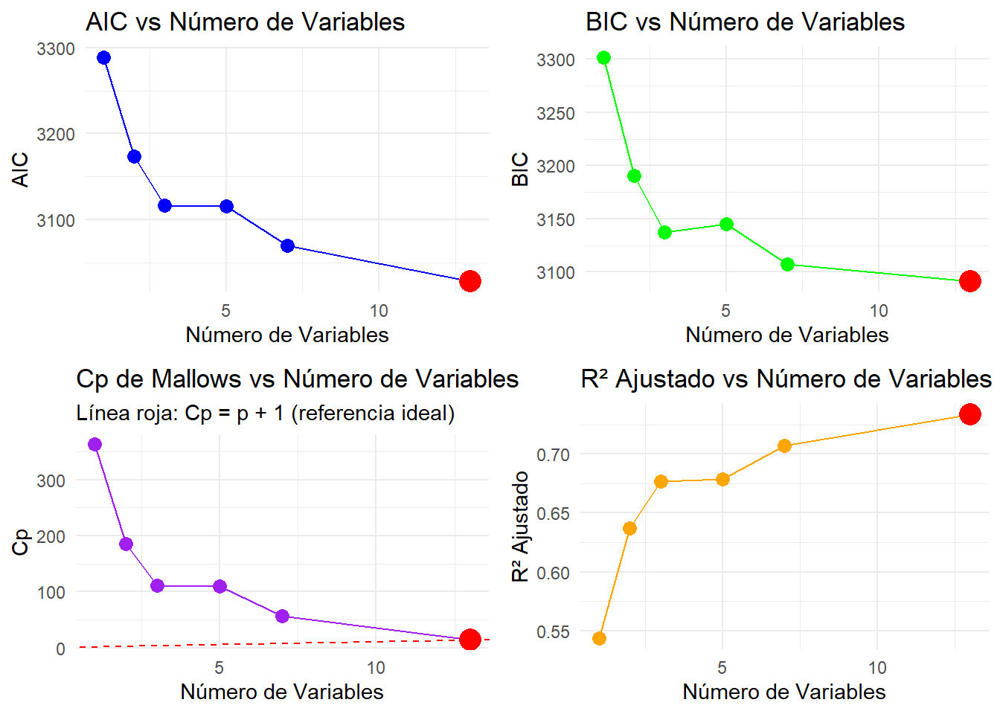
Parte 4: Métodos de Selección Exhaustiva
Best Subset Selection
# Realizar best subset selection
best_subset <- regsubsets(medv ~ ., data = Boston, nvmax = 13)
subset_summary <- summary(best_subset)
# Crear dataframe con resultados
subset_results <- data.frame(
n_vars = 1:13,
RSS = subset_summary$rss,
R2 = subset_summary$rsq,
R2_adj = subset_summary$adjr2,
Cp = subset_summary$cp,
BIC = subset_summary$bic
)
print(subset_results) n_vars RSS R2 R2_adj Cp BIC
1 1 19472.38 0.5441463 0.5432418 362.75295 -385.0521
2 2 15439.31 0.6385616 0.6371245 185.64743 -496.2582
3 3 13727.99 0.6786242 0.6767036 111.64889 -549.4767
4 4 13228.91 0.6903077 0.6878351 91.48526 -561.9884
5 5 12469.34 0.7080893 0.7051702 59.75364 -585.6823
6 6 12141.07 0.7157742 0.7123567 47.17537 -592.9553
7 7 11868.24 0.7221614 0.7182560 37.05889 -598.2295
8 8 11678.30 0.7266079 0.7222072 30.62398 -600.1663
9 9 11526.12 0.7301704 0.7252743 25.86592 -600.5767
10 10 11308.58 0.7352631 0.7299149 18.20493 -603.9917
11 11 11081.36 0.7405823 0.7348058 10.11455 -608.0353
12 12 11078.85 0.7406412 0.7343282 12.00275 -601.9237
13 13 11078.78 0.7406427 0.7337897 14.00000 -595.7000# Identificar mejores modelos
mejor_r2_adj_idx <- which.max(subset_results$R2_adj)
mejor_cp_idx <- which.min(subset_results$Cp)
mejor_bic_idx <- which.min(subset_results$BIC)
cat("\n=== MEJORES MODELOS - BEST SUBSET SELECTION ===\n")
=== MEJORES MODELOS - BEST SUBSET SELECTION ===cat("Mejor R² ajustado:", mejor_r2_adj_idx, "variables\n")Mejor R² ajustado: 11 variablescat("Mejor Cp:", mejor_cp_idx, "variables\n")Mejor Cp: 11 variablescat("Mejor BIC:", mejor_bic_idx, "variables\n")Mejor BIC: 11 variables# Variables en cada modelo óptimo
cat("\n=== VARIABLES EN MODELOS ÓPTIMOS ===\n")
=== VARIABLES EN MODELOS ÓPTIMOS ===cat("Modelo con mejor R² ajustado (", mejor_r2_adj_idx, "vars):\n")Modelo con mejor R² ajustado ( 11 vars):vars_mejor_r2 <- names(which(subset_summary$which[mejor_r2_adj_idx, -1]))
cat(paste(vars_mejor_r2, collapse = ", "), "\n\n")crim, zn, chas, nox, rm, dis, rad, tax, ptratio, black, lstat cat("Modelo con mejor Cp (", mejor_cp_idx, "vars):\n")Modelo con mejor Cp ( 11 vars):vars_mejor_cp <- names(which(subset_summary$which[mejor_cp_idx, -1]))
cat(paste(vars_mejor_cp, collapse = ", "), "\n\n")crim, zn, chas, nox, rm, dis, rad, tax, ptratio, black, lstat cat("Modelo con mejor BIC (", mejor_bic_idx, "vars):\n")Modelo con mejor BIC ( 11 vars):vars_mejor_bic <- names(which(subset_summary$which[mejor_bic_idx, -1]))
cat(paste(vars_mejor_bic, collapse = ", "), "\n")crim, zn, chas, nox, rm, dis, rad, tax, ptratio, black, lstat Visualización del Best Subset Selection
# Gráfico de R² ajustado
p1 <- ggplot(subset_results, aes(x = n_vars, y = R2_adj)) +
geom_point(color = "blue", size = 2) +
geom_line(color = "blue") +
geom_point(aes(x = mejor_r2_adj_idx, y = R2_adj[mejor_r2_adj_idx]),
color = "red", size = 4) +
labs(title = "R² Ajustado - Best Subset",
x = "Número de Variables", y = "R² Ajustado") +
theme_minimal()
# Gráfico de Cp
p2 <- ggplot(subset_results, aes(x = n_vars, y = Cp)) +
geom_point(color = "purple", size = 2) +
geom_line(color = "purple") +
geom_abline(intercept = 1, slope = 1, color = "red", linetype = "dashed") +
geom_point(aes(x = mejor_cp_idx, y = Cp[mejor_cp_idx]),
color = "red", size = 4) +
labs(title = "Cp de Mallows - Best Subset",
x = "Número de Variables", y = "Cp") +
theme_minimal()
# Gráfico de BIC
p3 <- ggplot(subset_results, aes(x = n_vars, y = BIC)) +
geom_point(color = "green", size = 2) +
geom_line(color = "green") +
geom_point(aes(x = mejor_bic_idx, y = BIC[mejor_bic_idx]),
color = "red", size = 4) +
labs(title = "BIC - Best Subset",
x = "Número de Variables", y = "BIC") +
theme_minimal()
# Mostrar gráficos
grid.arrange(p1, p2, p3, ncol = 2)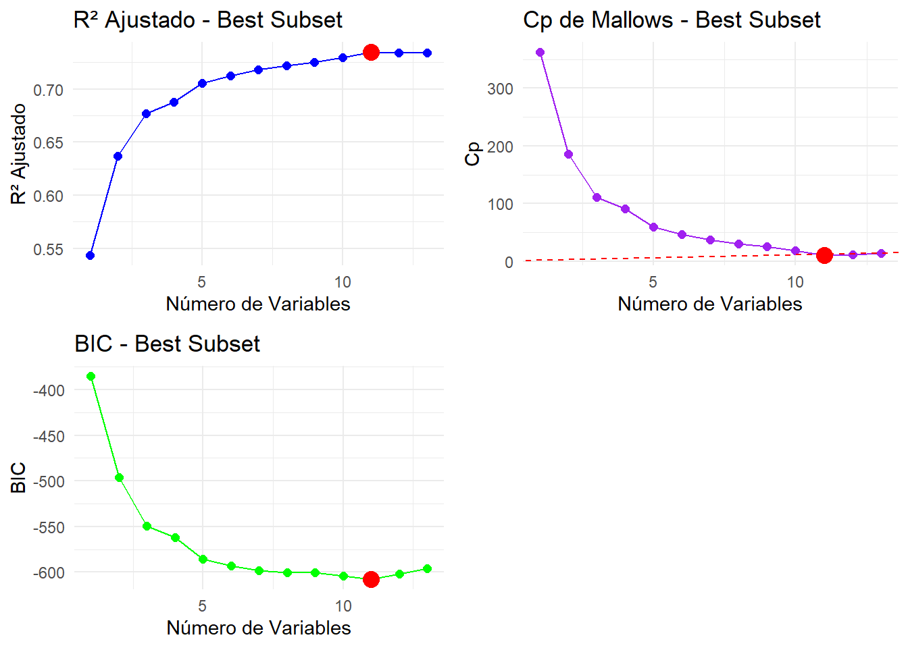
# Mostrar matriz de selección de variables
plot(best_subset, scale = "adjr2", main = "Variables Seleccionadas por Tamaño de Modelo")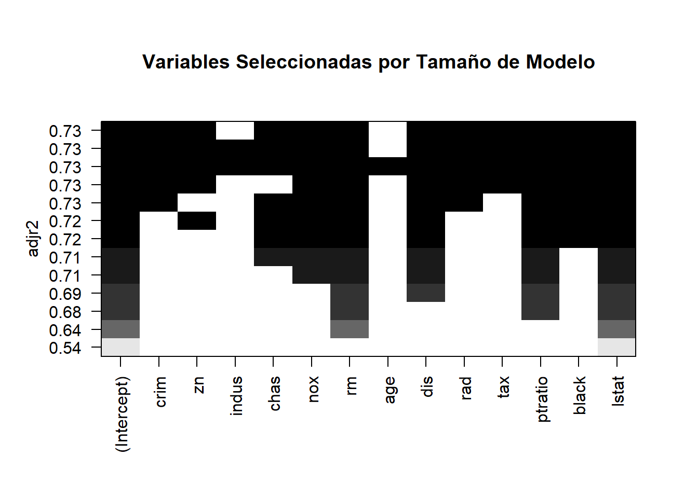
Parte 5: Métodos Automáticos Paso a Paso
Forward Selection
# Modelo inicial (solo intercepto)
modelo_inicial <- lm(medv ~ 1, data = Boston)
# Modelo completo (todas las variables)
modelo_completo_step <- lm(medv ~ ., data = Boston)
# Forward selection usando AIC
forward_aic <- step(modelo_inicial,
scope = list(lower = modelo_inicial, upper = modelo_completo_step),
direction = "forward",
trace = FALSE)
cat("=== FORWARD SELECTION (AIC) ===\n")=== FORWARD SELECTION (AIC) ===cat("Variables seleccionadas:\n")Variables seleccionadas:forward_vars <- names(coef(forward_aic))[-1] # Excluir intercepto
cat(paste(forward_vars, collapse = ", "), "\n")lstat, rm, ptratio, dis, nox, chas, black, zn, crim, rad, tax cat("AIC final:", AIC(forward_aic), "\n")AIC final: 3023.726 cat("Número de variables:", length(forward_vars), "\n\n")Número de variables: 11 # Resumen del modelo final
summary(forward_aic)
Call:
lm(formula = medv ~ lstat + rm + ptratio + dis + nox + chas +
black + zn + crim + rad + tax, data = Boston)
Residuals:
Min 1Q Median 3Q Max
-15.5984 -2.7386 -0.5046 1.7273 26.2373
Coefficients:
Estimate Std. Error t value Pr(>|t|)
(Intercept) 36.341145 5.067492 7.171 2.73e-12 ***
lstat -0.522553 0.047424 -11.019 < 2e-16 ***
rm 3.801579 0.406316 9.356 < 2e-16 ***
ptratio -0.946525 0.129066 -7.334 9.24e-13 ***
dis -1.492711 0.185731 -8.037 6.84e-15 ***
nox -17.376023 3.535243 -4.915 1.21e-06 ***
chas 2.718716 0.854240 3.183 0.001551 **
black 0.009291 0.002674 3.475 0.000557 ***
zn 0.045845 0.013523 3.390 0.000754 ***
crim -0.108413 0.032779 -3.307 0.001010 **
rad 0.299608 0.063402 4.726 3.00e-06 ***
tax -0.011778 0.003372 -3.493 0.000521 ***
---
Signif. codes: 0 '***' 0.001 '**' 0.01 '*' 0.05 '.' 0.1 ' ' 1
Residual standard error: 4.736 on 494 degrees of freedom
Multiple R-squared: 0.7406, Adjusted R-squared: 0.7348
F-statistic: 128.2 on 11 and 494 DF, p-value: < 2.2e-16Backward Elimination
# Backward elimination usando AIC
backward_aic <- step(modelo_completo_step,
direction = "backward",
trace = FALSE)
cat("=== BACKWARD ELIMINATION (AIC) ===\n")=== BACKWARD ELIMINATION (AIC) ===cat("Variables seleccionadas:\n")Variables seleccionadas:backward_vars <- names(coef(backward_aic))[-1] # Excluir intercepto
cat(paste(backward_vars, collapse = ", "), "\n")crim, zn, chas, nox, rm, dis, rad, tax, ptratio, black, lstat cat("AIC final:", AIC(backward_aic), "\n")AIC final: 3023.726 cat("Número de variables:", length(backward_vars), "\n\n")Número de variables: 11 # Resumen del modelo final
summary(backward_aic)
Call:
lm(formula = medv ~ crim + zn + chas + nox + rm + dis + rad +
tax + ptratio + black + lstat, data = Boston)
Residuals:
Min 1Q Median 3Q Max
-15.5984 -2.7386 -0.5046 1.7273 26.2373
Coefficients:
Estimate Std. Error t value Pr(>|t|)
(Intercept) 36.341145 5.067492 7.171 2.73e-12 ***
crim -0.108413 0.032779 -3.307 0.001010 **
zn 0.045845 0.013523 3.390 0.000754 ***
chas 2.718716 0.854240 3.183 0.001551 **
nox -17.376023 3.535243 -4.915 1.21e-06 ***
rm 3.801579 0.406316 9.356 < 2e-16 ***
dis -1.492711 0.185731 -8.037 6.84e-15 ***
rad 0.299608 0.063402 4.726 3.00e-06 ***
tax -0.011778 0.003372 -3.493 0.000521 ***
ptratio -0.946525 0.129066 -7.334 9.24e-13 ***
black 0.009291 0.002674 3.475 0.000557 ***
lstat -0.522553 0.047424 -11.019 < 2e-16 ***
---
Signif. codes: 0 '***' 0.001 '**' 0.01 '*' 0.05 '.' 0.1 ' ' 1
Residual standard error: 4.736 on 494 degrees of freedom
Multiple R-squared: 0.7406, Adjusted R-squared: 0.7348
F-statistic: 128.2 on 11 and 494 DF, p-value: < 2.2e-16Stepwise Selection
# Stepwise selection usando AIC
stepwise_aic <- step(modelo_inicial,
scope = list(lower = modelo_inicial, upper = modelo_completo_step),
direction = "both",
trace = FALSE)
cat("=== STEPWISE SELECTION (AIC) ===\n")=== STEPWISE SELECTION (AIC) ===cat("Variables seleccionadas:\n")Variables seleccionadas:stepwise_vars <- names(coef(stepwise_aic))[-1] # Excluir intercepto
cat(paste(stepwise_vars, collapse = ", "), "\n")lstat, rm, ptratio, dis, nox, chas, black, zn, crim, rad, tax cat("AIC final:", AIC(stepwise_aic), "\n")AIC final: 3023.726 cat("Número de variables:", length(stepwise_vars), "\n\n")Número de variables: 11 # Comparación de métodos automáticos
metodos_automaticos <- data.frame(
Metodo = c("Forward", "Backward", "Stepwise"),
N_Variables = c(length(forward_vars), length(backward_vars), length(stepwise_vars)),
AIC = c(AIC(forward_aic), AIC(backward_aic), AIC(stepwise_aic)),
R2_adj = c(summary(forward_aic)$adj.r.squared,
summary(backward_aic)$adj.r.squared,
summary(stepwise_aic)$adj.r.squared)
)
print(metodos_automaticos) Metodo N_Variables AIC R2_adj
1 Forward 11 3023.726 0.7348058
2 Backward 11 3023.726 0.7348058
3 Stepwise 11 3023.726 0.7348058Comparación de Variables Seleccionadas
# Crear matriz de comparación de variables seleccionadas
todas_vars <- names(Boston)[-which(names(Boston) == "medv")]
comparacion_seleccion <- data.frame(
Variable = todas_vars,
Forward = todas_vars %in% forward_vars,
Backward = todas_vars %in% backward_vars,
Stepwise = todas_vars %in% stepwise_vars,
Best_Subset_BIC = todas_vars %in% vars_mejor_bic,
Best_Subset_Cp = todas_vars %in% vars_mejor_cp
)
print(comparacion_seleccion) Variable Forward Backward Stepwise Best_Subset_BIC Best_Subset_Cp
1 crim TRUE TRUE TRUE TRUE TRUE
2 zn TRUE TRUE TRUE TRUE TRUE
3 indus FALSE FALSE FALSE FALSE FALSE
4 chas TRUE TRUE TRUE TRUE TRUE
5 nox TRUE TRUE TRUE TRUE TRUE
6 rm TRUE TRUE TRUE TRUE TRUE
7 age FALSE FALSE FALSE FALSE FALSE
8 dis TRUE TRUE TRUE TRUE TRUE
9 rad TRUE TRUE TRUE TRUE TRUE
10 tax TRUE TRUE TRUE TRUE TRUE
11 ptratio TRUE TRUE TRUE TRUE TRUE
12 black TRUE TRUE TRUE TRUE TRUE
13 lstat TRUE TRUE TRUE TRUE TRUE# Contar coincidencias
cat("\n=== ANÁLISIS DE COINCIDENCIAS ===\n")
=== ANÁLISIS DE COINCIDENCIAS ===cat("Variables seleccionadas por todos los métodos:\n")Variables seleccionadas por todos los métodos:vars_todas <- todas_vars[apply(comparacion_seleccion[,-1], 1, all)]
if(length(vars_todas) > 0) {
cat(paste(vars_todas, collapse = ", "), "\n")
} else {
cat("Ninguna variable fue seleccionada por todos los métodos\n")
}crim, zn, chas, nox, rm, dis, rad, tax, ptratio, black, lstat cat("\nVariables seleccionadas por al menos 3 métodos:\n")
Variables seleccionadas por al menos 3 métodos:vars_mayoria <- todas_vars[apply(comparacion_seleccion[,-1], 1, sum) >= 3]
cat(paste(vars_mayoria, collapse = ", "), "\n")crim, zn, chas, nox, rm, dis, rad, tax, ptratio, black, lstat Parte 6: Métodos de Regularización
Preparación de Datos para Regularización
# Preparar matrices para glmnet
X <- model.matrix(medv ~ ., Boston)[, -1] # Excluir intercepto
y <- Boston$medv
# División train/test para regularización
set.seed(123)
train_indices <- sample(1:nrow(X), 0.7 * nrow(X))
X_train <- X[train_indices, ]
y_train <- y[train_indices]
X_test <- X[-train_indices, ]
y_test <- y[-train_indices]
cat("=== DATOS PARA REGULARIZACIÓN ===\n")=== DATOS PARA REGULARIZACIÓN ===cat("Entrenamiento:", nrow(X_train), "observaciones\n")Entrenamiento: 354 observacionescat("Prueba:", nrow(X_test), "observaciones\n")Prueba: 152 observacionescat("Variables predictoras:", ncol(X), "\n")Variables predictoras: 13 Ridge Regression
# Grid de valores lambda
lambda_grid <- 10^seq(10, -2, length = 100)
# Ajustar Ridge regression
ridge_model <- glmnet(X_train, y_train, alpha = 0, lambda = lambda_grid)
# Validación cruzada para seleccionar lambda óptimo
ridge_cv <- cv.glmnet(X_train, y_train, alpha = 0, lambda = lambda_grid, nfolds = 10)
# Lambda óptimo
lambda_ridge_min <- ridge_cv$lambda.min
lambda_ridge_1se <- ridge_cv$lambda.1se
cat("=== RIDGE REGRESSION ===\n")=== RIDGE REGRESSION ===cat("Lambda mínimo:", lambda_ridge_min, "\n")Lambda mínimo: 0.2154435 cat("Lambda 1SE:", lambda_ridge_1se, "\n")Lambda 1SE: 3.511192 # Predicciones en conjunto de prueba
ridge_pred_min <- predict(ridge_model, s = lambda_ridge_min, newx = X_test)
ridge_pred_1se <- predict(ridge_model, s = lambda_ridge_1se, newx = X_test)
# Métricas de rendimiento
ridge_rmse_min <- sqrt(mean((ridge_pred_min - y_test)^2))
ridge_rmse_1se <- sqrt(mean((ridge_pred_1se - y_test)^2))
cat("RMSE (lambda min):", round(ridge_rmse_min, 3), "\n")RMSE (lambda min): 4.808 cat("RMSE (lambda 1SE):", round(ridge_rmse_1se, 3), "\n")RMSE (lambda 1SE): 5.097 # Coeficientes finales
ridge_coefs <- predict(ridge_model, type = "coefficients", s = lambda_ridge_min)[1:14, ]
print(round(ridge_coefs, 4))(Intercept) crim zn indus chas nox
35.0389 -0.1006 0.0457 -0.0737 4.1240 -12.3324
rm age dis rad tax ptratio
3.3099 -0.0028 -1.3924 0.2352 -0.0074 -0.8353
black lstat
0.0069 -0.5599 # Gráfico de validación cruzada
plot(ridge_cv, main = "Validación Cruzada - Ridge Regression")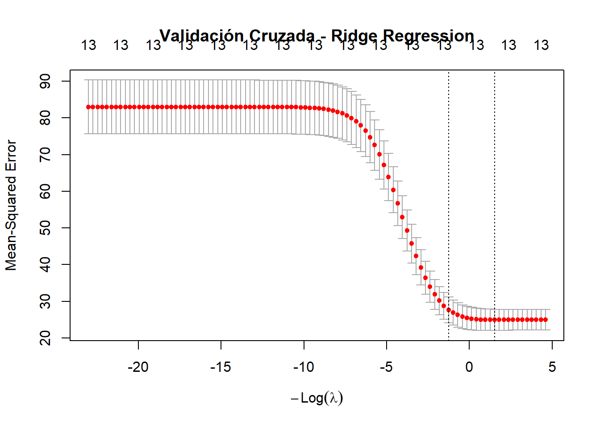
Lasso Regression
# Ajustar Lasso regression
lasso_model <- glmnet(X_train, y_train, alpha = 1, lambda = lambda_grid)
# Validación cruzada para seleccionar lambda óptimo
lasso_cv <- cv.glmnet(X_train, y_train, alpha = 1, lambda = lambda_grid, nfolds = 10)
# Lambda óptimo
lambda_lasso_min <- lasso_cv$lambda.min
lambda_lasso_1se <- lasso_cv$lambda.1se
cat("\n=== LASSO REGRESSION ===\n")
=== LASSO REGRESSION ===cat("Lambda mínimo:", lambda_lasso_min, "\n")Lambda mínimo: 0.03053856 cat("Lambda 1SE:", lambda_lasso_1se, "\n")Lambda 1SE: 0.4977024 # Predicciones en conjunto de prueba
lasso_pred_min <- predict(lasso_model, s = lambda_lasso_min, newx = X_test)
lasso_pred_1se <- predict(lasso_model, s = lambda_lasso_1se, newx = X_test)
# Métricas de rendimiento
lasso_rmse_min <- sqrt(mean((lasso_pred_min - y_test)^2))
lasso_rmse_1se <- sqrt(mean((lasso_pred_1se - y_test)^2))
cat("RMSE (lambda min):", round(lasso_rmse_min, 3), "\n")RMSE (lambda min): 4.809 cat("RMSE (lambda 1SE):", round(lasso_rmse_1se, 3), "\n")RMSE (lambda 1SE): 5.173 # Coeficientes finales (Lasso puede hacer coeficientes = 0)
lasso_coefs <- predict(lasso_model, type = "coefficients", s = lambda_lasso_min)[1:14, ]
print(round(lasso_coefs, 4))(Intercept) crim zn indus chas nox
36.6203 -0.0995 0.0480 -0.0601 4.0266 -13.2037
rm age dis rad tax ptratio
3.2292 0.0000 -1.4423 0.2503 -0.0082 -0.8410
black lstat
0.0065 -0.5850 # Variables seleccionadas por Lasso
vars_lasso <- names(lasso_coefs[lasso_coefs != 0])[-1] # Excluir intercepto
cat("\nVariables seleccionadas por Lasso:", paste(vars_lasso, collapse = ", "), "\n")
Variables seleccionadas por Lasso: crim, zn, indus, chas, nox, rm, dis, rad, tax, ptratio, black, lstat cat("Número de variables seleccionadas:", length(vars_lasso), "\n")Número de variables seleccionadas: 12 # Gráfico de validación cruzada
plot(lasso_cv, main = "Validación Cruzada - Lasso Regression")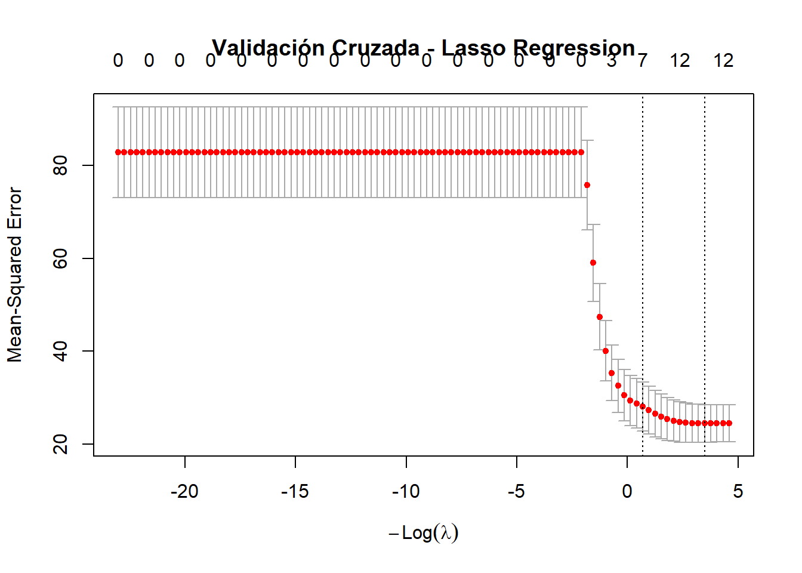
Elastic Net
# Grid de valores alpha para Elastic Net
alpha_grid <- seq(0, 1, length = 11)
# Función para encontrar el mejor alpha
best_alpha_search <- function(alpha_val) {
cv_result <- cv.glmnet(X_train, y_train, alpha = alpha_val, lambda = lambda_grid, nfolds = 10)
return(data.frame(alpha = alpha_val,
lambda_min = cv_result$lambda.min,
cvm_min = min(cv_result$cvm)))
}
# Buscar mejor alpha
alpha_results <- map_dfr(alpha_grid, best_alpha_search)
best_alpha <- alpha_results$alpha[which.min(alpha_results$cvm_min)]
cat("\n=== ELASTIC NET ===\n")
=== ELASTIC NET ===cat("Mejor alpha:", best_alpha, "\n")Mejor alpha: 0.1 # Ajustar Elastic Net con mejor alpha
elastic_model <- glmnet(X_train, y_train, alpha = best_alpha, lambda = lambda_grid)
elastic_cv <- cv.glmnet(X_train, y_train, alpha = best_alpha, lambda = lambda_grid, nfolds = 10)
lambda_elastic_min <- elastic_cv$lambda.min
cat("Lambda óptimo:", lambda_elastic_min, "\n")Lambda óptimo: 0.09326033 # Predicciones en conjunto de prueba
elastic_pred <- predict(elastic_model, s = lambda_elastic_min, newx = X_test)
elastic_rmse <- sqrt(mean((elastic_pred - y_test)^2))
cat("RMSE:", round(elastic_rmse, 3), "\n")RMSE: 4.807 # Coeficientes finales
elastic_coefs <- predict(elastic_model, type = "coefficients", s = lambda_elastic_min)[1:14, ]
print(round(elastic_coefs, 4))(Intercept) crim zn indus chas nox
36.5105 -0.1027 0.0484 -0.0654 4.0768 -13.2051
rm age dis rad tax ptratio
3.2478 -0.0011 -1.4508 0.2576 -0.0084 -0.8440
black lstat
0.0068 -0.5747 # Variables seleccionadas por Elastic Net
vars_elastic <- names(elastic_coefs[abs(elastic_coefs) > 1e-6])[-1] # Excluir intercepto
cat("\nVariables seleccionadas por Elastic Net:", paste(vars_elastic, collapse = ", "), "\n")
Variables seleccionadas por Elastic Net: crim, zn, indus, chas, nox, rm, age, dis, rad, tax, ptratio, black, lstat cat("Número de variables seleccionadas:", length(vars_elastic), "\n")Número de variables seleccionadas: 13 Comparación de Métodos de Regularización
# Comparar todos los métodos de regularización
comparacion_reg <- data.frame(
Metodo = c("Ridge (min)", "Ridge (1SE)", "Lasso (min)", "Lasso (1SE)", "Elastic Net"),
RMSE = c(ridge_rmse_min, ridge_rmse_1se, lasso_rmse_min, lasso_rmse_1se, elastic_rmse),
N_Variables = c(sum(abs(ridge_coefs[-1]) > 1e-6),
sum(abs(predict(ridge_model, type = "coefficients", s = lambda_ridge_1se)[2:14, ]) > 1e-6),
length(vars_lasso),
sum(abs(predict(lasso_model, type = "coefficients", s = lambda_lasso_1se)[2:14, ]) > 1e-6),
length(vars_elastic))
)
print(comparacion_reg) Metodo RMSE N_Variables
1 Ridge (min) 4.808306 13
2 Ridge (1SE) 5.097124 13
3 Lasso (min) 4.809276 12
4 Lasso (1SE) 5.173273 7
5 Elastic Net 4.806585 13# Gráfico de comparación
ggplot(comparacion_reg, aes(x = N_Variables, y = RMSE, color = Metodo)) +
geom_point(size = 4) +
geom_text(aes(label = Metodo), hjust = 0, vjust = -0.5, size = 3) +
labs(title = "Comparación de Métodos de Regularización",
x = "Número de Variables Efectivas",
y = "RMSE en Conjunto de Prueba") +
theme_minimal() +
theme(legend.position = "none")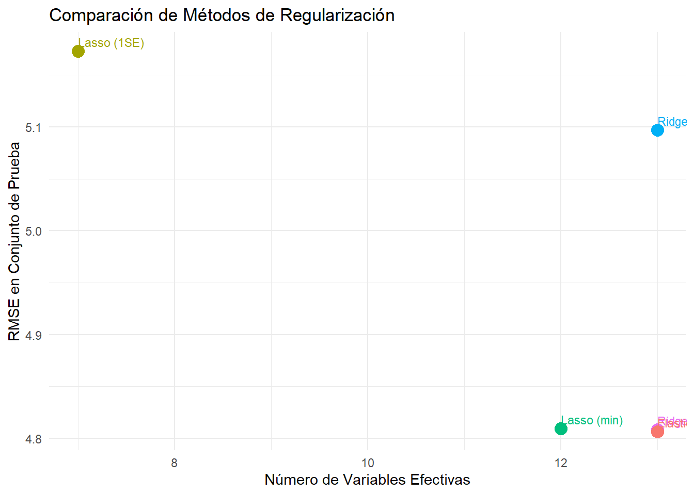
Parte 7: Validación Rigurosa del Modelo
Partición Final de Datos
# Partición inicial: 60% modelado, 40% validación final
set.seed(42)
indices_final <- createDataPartition(Boston$medv, p = 0.6, list = FALSE)
datos_modelado <- Boston[indices_final, ]
datos_validacion_final <- Boston[-indices_final, ]
cat("=== PARTICIÓN FINAL DE DATOS ===\n")=== PARTICIÓN FINAL DE DATOS ===cat("Datos para modelado:", nrow(datos_modelado), "observaciones\n")Datos para modelado: 306 observacionescat("Datos para validación final:", nrow(datos_validacion_final), "observaciones\n")Datos para validación final: 200 observaciones# Dentro de datos de modelado: 75% entrenamiento, 25% test para comparar modelos
indices_train <- createDataPartition(datos_modelado$medv, p = 0.75, list = FALSE)
datos_train <- datos_modelado[indices_train, ]
datos_test <- datos_modelado[-indices_train, ]
cat("Datos de entrenamiento:", nrow(datos_train), "observaciones\n")Datos de entrenamiento: 231 observacionescat("Datos de test (comparación):", nrow(datos_test), "observaciones\n")Datos de test (comparación): 75 observacionesValidación Cruzada de Modelos Seleccionados
# Configurar validación cruzada 10-fold
control_cv <- trainControl(method = "cv", number = 10, verboseIter = FALSE)
# Modelos a comparar basados en selecciones anteriores
modelos_finales <- list()
# 1. Modelo basado en Best Subset (BIC)
formula_bic <- as.formula(paste("medv ~", paste(vars_mejor_bic, collapse = " + ")))
modelo_bic_cv <- train(formula_bic, data = datos_modelado, method = "lm", trControl = control_cv)
modelos_finales[["Best_Subset_BIC"]] <- modelo_bic_cv
# 2. Modelo basado en Stepwise
formula_stepwise <- as.formula(paste("medv ~", paste(stepwise_vars, collapse = " + ")))
modelo_stepwise_cv <- train(formula_stepwise, data = datos_modelado, method = "lm", trControl = control_cv)
modelos_finales[["Stepwise"]] <- modelo_stepwise_cv
# 3. Modelo basado en Lasso (usando variables seleccionadas)
if(length(vars_lasso) > 0) {
formula_lasso <- as.formula(paste("medv ~", paste(vars_lasso, collapse = " + ")))
modelo_lasso_cv <- train(formula_lasso, data = datos_modelado, method = "lm", trControl = control_cv)
modelos_finales[["Lasso_Selection"]] <- modelo_lasso_cv
}
# 4. Modelo Ridge (regularizado)
# Preparar datos para glmnet en caret
X_modelado <- model.matrix(medv ~ ., datos_modelado)[, -1]
y_modelado <- datos_modelado$medv
# Grid de lambda para Ridge
ridge_grid <- expand.grid(alpha = 0, lambda = seq(0.1, 10, length = 50))
modelo_ridge_cv <- train(X_modelado, y_modelado, method = "glmnet",
tuneGrid = ridge_grid, trControl = control_cv)
modelos_finales[["Ridge"]] <- modelo_ridge_cv
# 5. Modelo Lasso (regularizado)
lasso_grid <- expand.grid(alpha = 1, lambda = seq(0.01, 1, length = 50))
modelo_lasso_reg_cv <- train(X_modelado, y_modelado, method = "glmnet",
tuneGrid = lasso_grid, trControl = control_cv)
modelos_finales[["Lasso_Regularized"]] <- modelo_lasso_reg_cv
# Comparar resultados de validación cruzada
resultados_cv <- resamples(modelos_finales[1:3]) # Solo modelos lm
summary(resultados_cv)
Call:
summary.resamples(object = resultados_cv)
Models: Best_Subset_BIC, Stepwise, Lasso_Selection
Number of resamples: 10
MAE
Min. 1st Qu. Median Mean 3rd Qu. Max. NA's
Best_Subset_BIC 2.511621 3.405453 3.709447 3.583130 3.964655 4.261554 0
Stepwise 3.004539 3.138063 3.512252 3.651229 3.908887 5.203631 0
Lasso_Selection 3.005074 3.185410 3.440805 3.582353 3.996335 4.324443 0
RMSE
Min. 1st Qu. Median Mean 3rd Qu. Max. NA's
Best_Subset_BIC 3.548486 4.314765 5.284095 5.102120 6.093742 6.295601 0
Stepwise 3.653542 4.140664 5.029286 5.137206 5.582081 8.352953 0
Lasso_Selection 3.741350 4.523334 4.633436 5.125640 6.000213 6.731290 0
Rsquared
Min. 1st Qu. Median Mean 3rd Qu. Max.
Best_Subset_BIC 0.4930215 0.6516873 0.7047988 0.7104641 0.7644463 0.9291600
Stepwise 0.4532123 0.6946508 0.7499443 0.7224326 0.8189765 0.8821170
Lasso_Selection 0.5412993 0.6201279 0.7349385 0.7142692 0.7787736 0.9108091
NA's
Best_Subset_BIC 0
Stepwise 0
Lasso_Selection 0# Extraer métricas de todos los modelos
metricas_cv <- data.frame(
Modelo = names(modelos_finales),
RMSE_CV = c(
modelo_bic_cv$results$RMSE,
modelo_stepwise_cv$results$RMSE,
if(exists("modelo_lasso_cv")) modelo_lasso_cv$results$RMSE else NA,
min(modelo_ridge_cv$results$RMSE),
min(modelo_lasso_reg_cv$results$RMSE)
),
R2_CV = c(
modelo_bic_cv$results$Rsquared,
modelo_stepwise_cv$results$Rsquared,
if(exists("modelo_lasso_cv")) modelo_lasso_cv$results$Rsquared else NA,
max(modelo_ridge_cv$results$Rsquared),
max(modelo_lasso_reg_cv$results$Rsquared)
)
)
print(metricas_cv) Modelo RMSE_CV R2_CV
1 Best_Subset_BIC 5.102120 0.7104641
2 Stepwise 5.137206 0.7224326
3 Lasso_Selection 5.125640 0.7142692
4 Ridge 5.006564 0.7293036
5 Lasso_Regularized 5.076481 0.7240252Evaluación Final en Datos No Vistos
# Seleccionar el mejor modelo basado en validación cruzada
mejor_modelo_idx <- which.min(metricas_cv$RMSE_CV[!is.na(metricas_cv$RMSE_CV)])
mejor_modelo_nombre <- metricas_cv$Modelo[mejor_modelo_idx]
mejor_modelo <- modelos_finales[[mejor_modelo_nombre]]
cat("=== EVALUACIÓN FINAL ===\n")=== EVALUACIÓN FINAL ===cat("Mejor modelo según CV:", mejor_modelo_nombre, "\n")Mejor modelo según CV: Ridge cat("RMSE de validación cruzada:", round(min(metricas_cv$RMSE_CV, na.rm = TRUE), 3), "\n")RMSE de validación cruzada: 5.007 # Predicciones en conjunto de validación final
if(mejor_modelo_nombre %in% c("Ridge", "Lasso_Regularized")) {
# Para modelos glmnet, preparar matriz
X_validacion <- model.matrix(medv ~ ., datos_validacion_final)[, -1]
predicciones_finales <- predict(mejor_modelo, X_validacion)
} else {
# Para modelos lm
predicciones_finales <- predict(mejor_modelo, datos_validacion_final)
}
# Métricas en conjunto de validación final
rmse_final <- RMSE(predicciones_finales, datos_validacion_final$medv)
mae_final <- MAE(predicciones_finales, datos_validacion_final$medv)
r2_final <- cor(predicciones_finales, datos_validacion_final$medv)^2
cat("\n=== RENDIMIENTO EN DATOS DE VALIDACIÓN FINAL ===\n")
=== RENDIMIENTO EN DATOS DE VALIDACIÓN FINAL ===cat("RMSE:", round(rmse_final, 3), "\n")RMSE: 4.373 cat("MAE:", round(mae_final, 3), "\n")MAE: 3.18 cat("R²:", round(r2_final, 3), "\n")R²: 0.739 # Comparación CV vs Final
cat("\nComparación CV vs Final:\n")
Comparación CV vs Final:cat("RMSE CV:", round(min(metricas_cv$RMSE_CV, na.rm = TRUE), 3), "\n")RMSE CV: 5.007 cat("RMSE Final:", round(rmse_final, 3), "\n")RMSE Final: 4.373 diferencia_rmse <- rmse_final - min(metricas_cv$RMSE_CV, na.rm = TRUE)
cat("Diferencia:", round(diferencia_rmse, 3), "\n")Diferencia: -0.634 if(abs(diferencia_rmse) < 0.5) {
cat("✓ El modelo generaliza bien - diferencia mínima entre CV y validación final\n")
} else if(diferencia_rmse > 0.5) {
cat("⚠ Posible sobreajuste - el modelo funciona peor en datos nuevos\n")
} else {
cat("⚠ El modelo puede estar subestimado por validación cruzada\n")
}⚠ El modelo puede estar subestimado por validación cruzadaDiagnóstico Visual del Modelo Final
# Gráfico de predicciones vs valores reales
diagnostic_data <- data.frame(
Real = datos_validacion_final$medv,
Predicho = as.numeric(predicciones_finales),
Residuo = datos_validacion_final$medv - as.numeric(predicciones_finales)
)
# Gráfico de predicciones vs reales
p1 <- ggplot(diagnostic_data, aes(x = Real, y = Predicho)) +
geom_point(alpha = 0.7, color = "blue") +
geom_abline(slope = 1, intercept = 0, color = "red", linetype = "dashed") +
labs(title = "Predicciones vs Valores Reales",
subtitle = paste("Modelo:", mejor_modelo_nombre),
x = "Valores Reales", y = "Predicciones") +
theme_minimal()
# Gráfico de residuos
p2 <- ggplot(diagnostic_data, aes(x = Predicho, y = Residuo)) +
geom_point(alpha = 0.7, color = "blue") +
geom_hline(yintercept = 0, color = "red", linetype = "dashed") +
geom_smooth(se = FALSE, color = "orange") +
labs(title = "Residuos vs Predicciones",
x = "Predicciones", y = "Residuos") +
theme_minimal()
# Histograma de residuos
p3 <- ggplot(diagnostic_data, aes(x = Residuo)) +
geom_histogram(bins = 20, fill = "lightblue", color = "black", alpha = 0.7) +
labs(title = "Distribución de Residuos",
x = "Residuos", y = "Frecuencia") +
theme_minimal()
# Q-Q plot de residuos
p4 <- ggplot(diagnostic_data, aes(sample = Residuo)) +
stat_qq() +
stat_qq_line(color = "red") +
labs(title = "Q-Q Plot de Residuos",
x = "Cuantiles Teóricos", y = "Cuantiles de Residuos") +
theme_minimal()
# Mostrar todos los gráficos
grid.arrange(p1, p2, p3, p4, ncol = 2)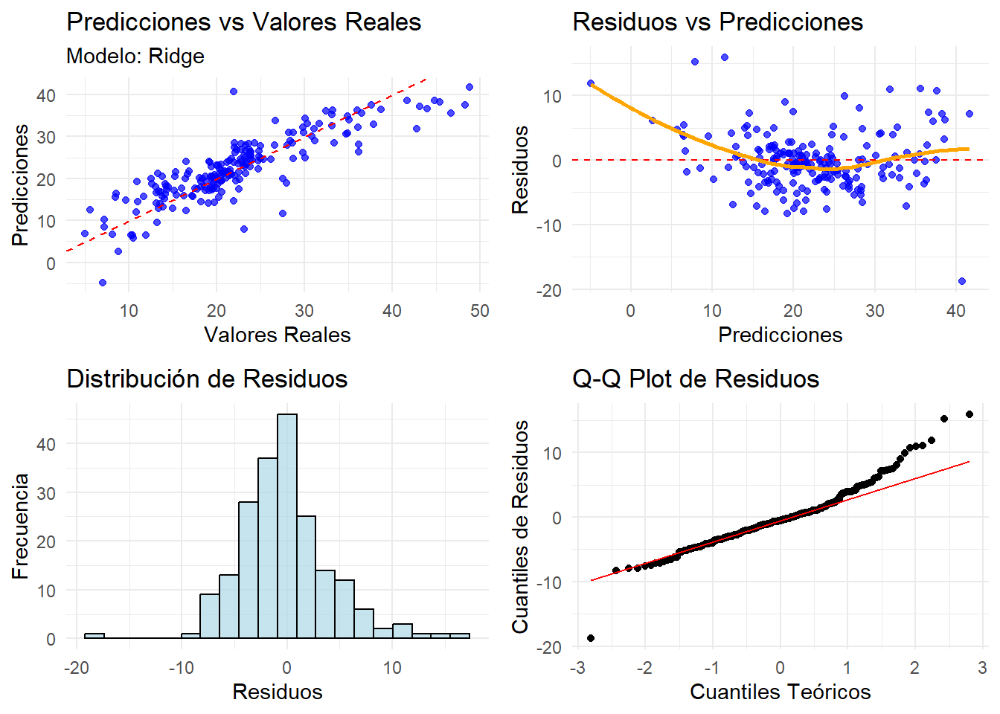
Parte 8: Ejercicios Prácticos
Ejercicio 1: Dataset mtcars
# Aplicar todo el pipeline a mtcars
data(mtcars)
cat("=== EJERCICIO 1: DATASET MTCARS ===\n")=== EJERCICIO 1: DATASET MTCARS ===cat("Tu tarea: Aplicar el pipeline completo de selección de variables\n")Tu tarea: Aplicar el pipeline completo de selección de variablescat("Variable respuesta: mpg (millas por galón)\n")Variable respuesta: mpg (millas por galón)cat("Variables predictoras:", ncol(mtcars) - 1, "\n\n")Variables predictoras: 10 cat("Pasos a seguir:\n")Pasos a seguir:cat("1. Análisis exploratorio y filtrado básico\n")1. Análisis exploratorio y filtrado básicocat("2. Comparar modelos usando AIC, BIC, Cp\n")2. Comparar modelos usando AIC, BIC, Cpcat("3. Aplicar best subset selection\n")3. Aplicar best subset selectioncat("4. Probar métodos automáticos (forward, backward, stepwise)\n")4. Probar métodos automáticos (forward, backward, stepwise)cat("5. Aplicar regularización (Ridge, Lasso, Elastic Net)\n")5. Aplicar regularización (Ridge, Lasso, Elastic Net)cat("6. Validar el mejor modelo con validación cruzada\n")6. Validar el mejor modelo con validación cruzadacat("7. Evaluación final en conjunto de prueba\n\n")7. Evaluación final en conjunto de prueba# Tu código aquí:
# Ejemplo de inicio:
head(mtcars) mpg cyl disp hp drat wt qsec vs am gear carb
Mazda RX4 21.0 6 160 110 3.90 2.620 16.46 0 1 4 4
Mazda RX4 Wag 21.0 6 160 110 3.90 2.875 17.02 0 1 4 4
Datsun 710 22.8 4 108 93 3.85 2.320 18.61 1 1 4 1
Hornet 4 Drive 21.4 6 258 110 3.08 3.215 19.44 1 0 3 1
Hornet Sportabout 18.7 8 360 175 3.15 3.440 17.02 0 0 3 2
Valiant 18.1 6 225 105 2.76 3.460 20.22 1 0 3 1# Continúa con el análisis completo...Ejercicio 2: Dataset Simulado con Ruido
# Crear dataset desafiante para selección de variables
set.seed(456)
n <- 200
p_real <- 5 # Variables verdaderamente importantes
p_ruido <- 15 # Variables de ruido
# Variables importantes
X_real <- matrix(rnorm(n * p_real), n, p_real)
beta_real <- c(2.5, -1.8, 3.2, -2.1, 1.7)
# Variables de ruido
X_ruido <- matrix(rnorm(n * p_ruido), n, p_ruido)
# Crear algunas correlaciones entre variables de ruido para mayor desafío
X_ruido[, 2] <- 0.7 * X_ruido[, 1] + 0.3 * rnorm(n)
X_ruido[, 3] <- 0.6 * X_ruido[, 1] + 0.4 * rnorm(n)
# Combinar variables
X_total <- cbind(X_real, X_ruido)
colnames(X_total) <- c(paste0("Important_", 1:p_real), paste0("Noise_", 1:p_ruido))
# Variable respuesta
y_sim <- X_real %*% beta_real + rnorm(n, sd = 1.5)
# Dataset final
datos_simulados <- data.frame(y = y_sim, X_total)
cat("=== EJERCICIO 2: DATASET SIMULADO ===\n")=== EJERCICIO 2: DATASET SIMULADO ===cat("Observaciones:", nrow(datos_simulados), "\n")Observaciones: 200 cat("Variables predictoras:", ncol(datos_simulados) - 1, "\n")Variables predictoras: 20 cat("Variables verdaderamente importantes:", p_real, "\n")Variables verdaderamente importantes: 5 cat("Variables de ruido:", p_ruido, "\n\n")Variables de ruido: 15 cat("Desafío:\n")Desafío:cat("¿Pueden los métodos de selección identificar correctamente\n")¿Pueden los métodos de selección identificar correctamentecat("las 5 variables importantes y descartar las 15 de ruido?\n\n")las 5 variables importantes y descartar las 15 de ruido?# Tu código aquí:
# Aplica todos los métodos y compara los resultados
# ¿Qué método identifica mejor las variables verdaderas?Ejercicio 3: Comparación Sistemática
# Función para evaluar todos los métodos en un dataset
evaluar_metodos_seleccion <- function(datos, var_respuesta) {
# Esta función debería implementar todo el pipeline
# y retornar una tabla de comparación
cat("=== EJERCICIO 3: FUNCIÓN DE EVALUACIÓN ===\n")
cat("Implementa una función que:\n")
cat("1. Reciba un dataset y nombre de variable respuesta\n")
cat("2. Aplique todos los métodos de selección\n")
cat("3. Compare los resultados usando validación cruzada\n")
cat("4. Retorne un resumen con las mejores opciones\n\n")
# Tu implementación aquí...
return(NULL)
}
# Prueba la función con diferentes datasets
# evaluar_metodos_seleccion(Boston, "medv")
# evaluar_metodos_seleccion(mtcars, "mpg")
# evaluar_metodos_seleccion(datos_simulados, "y")Parte 9: Conceptos Clave para Recordar
Resumen de Métodos
ImportantGuía de Decisión para Selección de Variables
¿Cuándo usar cada método?
Filtrado Básico:
- Siempre como primer paso
- Elimina variables obvialmente problemáticas
- Reduce dimensionalidad para métodos posteriores
Best Subset Selection:
- Cuando p < 15-20 variables
- Se requiere la solución óptima garantizada
- Recursos computacionales suficientes
Métodos Automáticos (Forward/Backward/Stepwise):
- Cuando p es moderado a grande (p > 20)
- Exploración rápida del espacio de modelos
- Como punto de partida para otros métodos
Regularización:
- Ridge: Todas las variables son potencialmente relevantes, hay multicolinealidad
- Lasso: Se sospecha que muchas variables son irrelevantes
- Elastic Net: Hay grupos de variables correlacionadas, se busca estabilidad
Criterios de Información:
- AIC: Objetivo predictivo
- BIC: Objetivo de identificar el “modelo verdadero”
- Cp de Mallows: Análisis del sesgo-varianza
Métricas de Validación
NoteInterpretación de Métricas
RMSE (Root Mean Square Error):
- Unidades de la variable respuesta
- Penaliza errores grandes desproporcionadamente
- Sensible a outliers
MAE (Mean Absolute Error):
- Unidades de la variable respuesta
- Trata todos los errores proporcionalmente
- Más robusto a outliers
R² de Validación Cruzada:
- Proporción de varianza explicada en datos no vistos
- Mejor indicador que R² de entrenamiento
- Valores similares entre CV y test indican buena generalización
Señales de Alerta
WarningProblemas Comunes
Sobreajuste:
- Error de entrenamiento << Error de validación
- Modelo muy complejo para el tamaño de muestra
- R² muy alto pero RMSE de validación alto
Subajuste:
- Error de entrenamiento ≈ Error de validación (ambos altos)
- Modelo demasiado simple
- Patrones no capturados en los residuos
Selección Inestable:
- Métodos diferentes seleccionan variables muy distintas
- Resultados cambian mucho con pequeñas variaciones en datos
- Indica posible sobreajuste o datos insuficientes
Mejores Prácticas
- Siempre partir datos antes de cualquier análisis
- Usar validación cruzada para selección, conjunto independiente para evaluación final
- Comparar múltiples métodos y buscar consenso
- Validar supuestos del modelo final
- Considerar interpretabilidad vs precisión predictiva
- Documentar todo el proceso de selección
Próximo Laboratorio
En el Laboratorio 5 exploraremos modelos lineales generalizados (GLM), incluyendo regresión logística y regresión de Poisson, ampliando nuestras herramientas para variables respuesta no continuas.